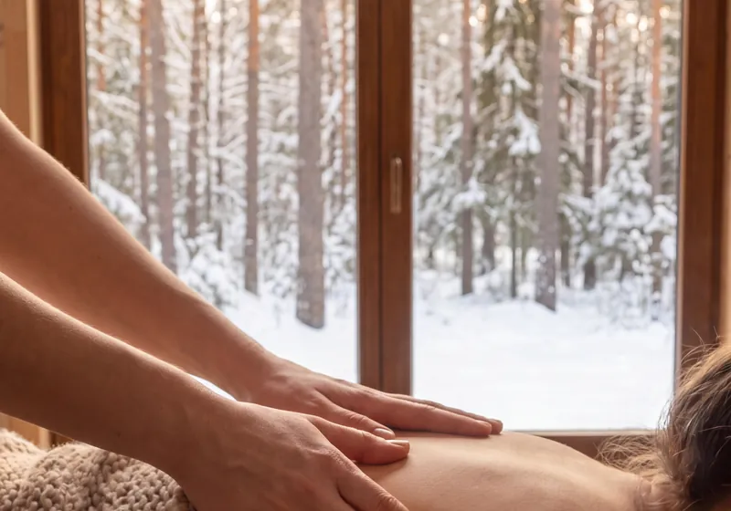

Осень и зима в кабинете массажа
За окном дождь или снег, а внутри горят свечи и греются камни. Любую картинку можно скачать в хорошем качестве и поставить себе в сторис.
Картинки, которые можно взять себе
Скачивайте их для сторис и каруселей или собирайте в свои подборки. Только укажите palpo.org. Первая картинка появилась здесь 21.11.2026.
Картинка сделана для настроения и не показывает реальный кабинет. Её можно взять в сторис или карусель, только укажите palpo.org. Размещена 21.11.2026.

Картинка сделана для настроения и не показывает реальный кабинет. Её можно взять как обои или в сторис, только укажите palpo.org. Размещена 21.11.2026.

Картинка сделана для настроения и не показывает реальный кабинет. Её можно взять как обои или в сторис, только укажите palpo.org. Размещена 21.11.2026.

Картинка сделана для настроения и не показывает реальный кабинет. Её можно взять как обои или в сторис, только укажите palpo.org. Размещена 21.11.2026.

Картинка сделана для настроения и не показывает реальный кабинет. Её можно взять как обои или в сторис, только укажите palpo.org. Размещена 21.11.2026.

Картинка сделана для настроения и не показывает реальный кабинет. Её можно взять как обои или в сторис, только укажите palpo.org. Размещена 21.11.2026.

Картинка сделана для настроения и не показывает реальный кабинет. Её можно взять как обои или в сторис, только укажите palpo.org. Размещена 21.11.2026.

Картинка сделана для настроения и не показывает реальный кабинет. Её можно взять как обои или в сторис, только укажите palpo.org. Размещена 22.11.2026.

Картинка сделана для настроения и не показывает реальный кабинет. Её можно взять как обои или в сторис, только укажите palpo.org. Размещена 22.11.2026.

Картинка сделана для настроения и не показывает реальный кабинет. Её можно взять как обои или в сторис, только укажите palpo.org. Размещена 22.11.2026.

Картинка сделана для настроения и не показывает реальный кабинет. Её можно взять как обои или в сторис, только укажите palpo.org. Размещена 22.11.2026.

Картинка сделана для настроения и не показывает реальный кабинет. Её можно взять как обои или в сторис, только укажите palpo.org. Размещена 22.11.2026.

Осень
Дождь за окном, клён на полу. Осенние картинки про массаж при свечах.


Зима
Снег за окном, а в кабинете пледы и горячий чай.


Рождество
Пока все бегают за подарками. Ёлки в огнях и открытки к Рождеству.


Эти картинки можно бесплатно брать себе: для сторис и каруселей, для своих подборок. Укажите palpo.org. Продавать их или использовать в рекламе можно только с разрешения. Картинки сделаны для настроения: это не снимки реального кабинета и не медицинские иллюстрации. © 2026 HARDZIYENKA ALIAKSEI / palpo.org